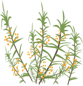
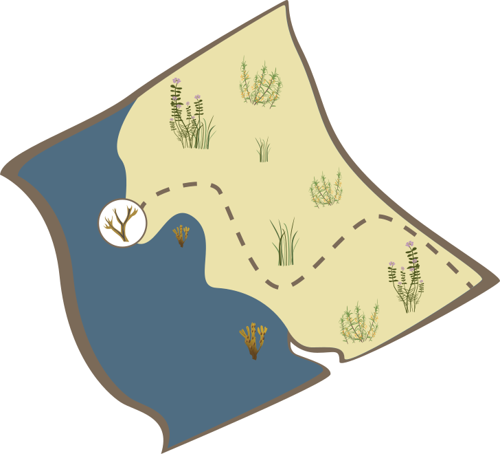

STRANDEN
Stranden med havet, opskyllet tang og grønne bælter af urter. I klitterne vokser marehalm og buskadser af hyben og havtorn.

Introduktion
Stranden er et barskt miljø, hvor alt liv må tilpasse sig salt, hård vind og stærk sol. Planternes strategi er at holde godt på væsken, så de ikke tørrer ud. Det giver saftige og sprøde vækster, der er rigtig gode i køkkenet. Det er bedst at sanke på stranden fra april til september, hvor du finder både spiselig tang og smagfulde urter og bær.
Disse ingredienser kan du finde!
-

Blærtang
Find ingredienserne på kortet!
